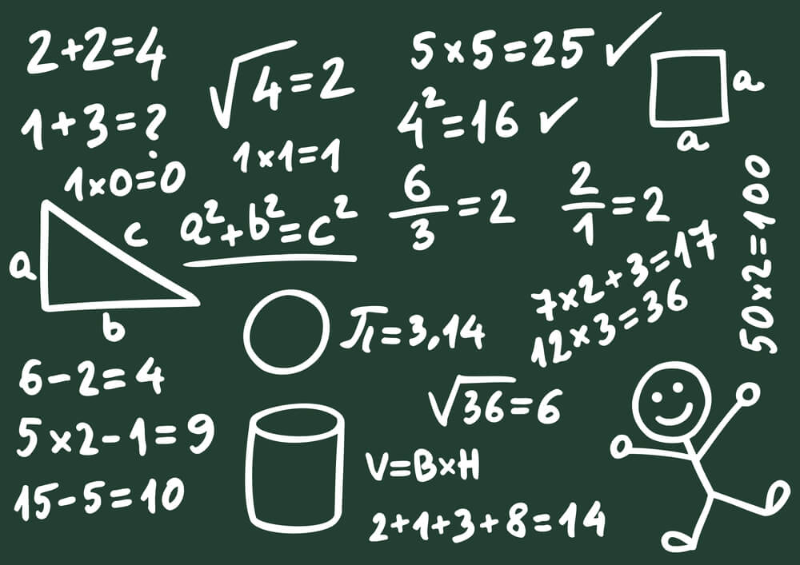
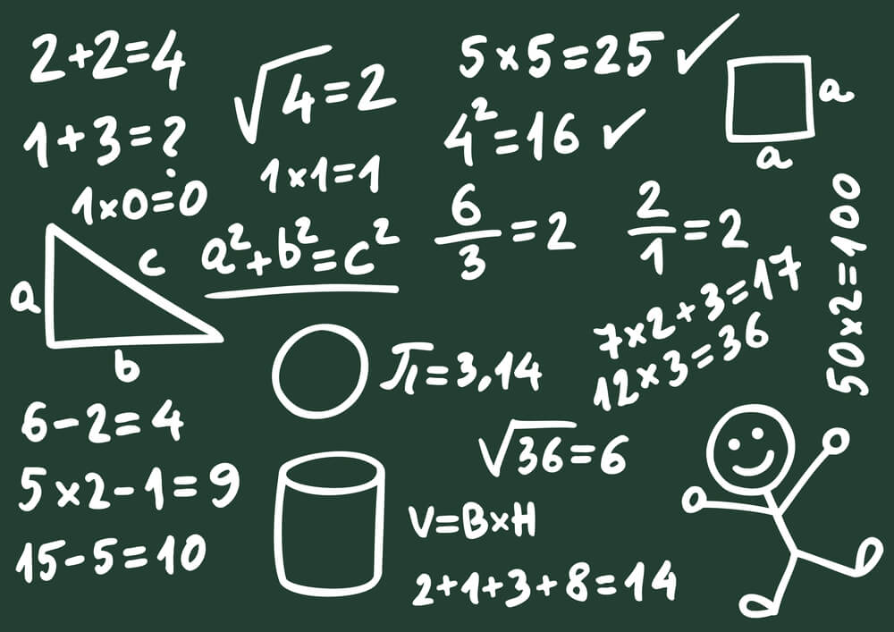

Alan Mathison Turing (Paddington, Londres; 23 de junio de 1912-Wilmslow, Cheshire; 7 de junio de 1954) fue un matemático, lógico, informático teórico, criptógrafo, filósofo y biólogo teórico británico.
Es considerado como uno de los padres de la ciencia de la computación y precursor de la informática moderna. Proporcionó una formalización influyente de los conceptos de algoritmo y computación: la máquina de Turing. Formuló su propia versión que hoy es ampliamente aceptada como la tesis de Church-Turing (1936) entre muchas otras de sus aportaciones.
Por razones de trabajo, la familia residía en la India británica. Sin embargo, tanto Julius como Ethel querían que sus hijos se criaran en Gran Bretaña, por lo que se mudaron a Maida Vale (Londres). Allí nació Alan Turing el 23 de junio de 1912. Turing tuvo un hermano mayor. Durante su infancia, sus padres viajaron constantemente entre Hastings, Reino Unido, y la India debido a que su padre seguía activo en la Administración Colonial, por lo que pasó algunos años viviendo con su hermano en la casa de un matrimonio retirado del ejército. Muy pronto Turing mostró signos del genio que luego sería. Desde temprana edad mostró un gran interés por la lectura, por los números y los rompecabezas.
 

Entre enero de 1922 y 1926, Turing estudió en la preparatoria Hazelhurst, una escuela independiente en el pueblo de Frant en Sussex (hoy East Oriental). En 1926, con trece años, ingresó en el internado de Sherborne, en Dorset. Su primer día de clase coincidió con la huelga general en Inglaterra, pero su determinación por asistir a clase era tan firme que recorrió con su bicicleta los más de 96 km que separaban Southampton de su escuela, pasando la noche en una posada. La inclinación natural de Turing hacia la matemática y la ciencia no le atrajo el respeto de sus profesores de Sherborne, cuyo concepto de educación hacía mayor énfasis en los clásicos. En la escuela de Sherbone, ganó la mayor parte de los premios matemáticos que se otorgaban y, además, realizaba experimentos químicos por su cuenta, aunque la opinión del profesorado respecto a la independencia y ambición de Turing no era demasiado favorable. A pesar de ello, el joven continuó mostrando una singular habilidad para los estudios que realmente le gustaban, y llegó a resolver problemas muy avanzados para su edad (16 años) sin ni siquiera haber estudiado cálculo elemental.
La carrera de Turing terminó súbitamente tras ser procesado por homosexualidad en 1952. Dos años después de su condena, murió según la versión oficial por suicidio; sin embargo, su muerte ha dado lugar a otras hipótesis, incluida la del envenenamiento accidental . Después de una campaña pública en 2009, el primer ministro británico, Gordon Brown, se disculpó públicamente en nombre del gobierno británico por «la forma espantosa en la que Turing había sido tratado». La reina Isabel II le otorgó un indulto póstumo en 2013. El término «ley Alan Turing» ahora se usa de manera informal para referirse a una ley de 2017 en el Reino Unido que perdona retroactivamente a hombres amonestados o condenados en virtud de la legislación que prohibía los actos homosexuales. Turing tiene un extenso legado con estatuas y muchas cosas que llevan su nombre, incluido un premio anual por innovación en informática. Aparece en el billete actual de 50 libras del Banco de Inglaterra, que se lanzó el 23 de junio de 2021, coincidiendo con su cumpleaños. Un programa de la BBC de 2019, votado por la audiencia, lo nombró la persona más grande del siglo XX.